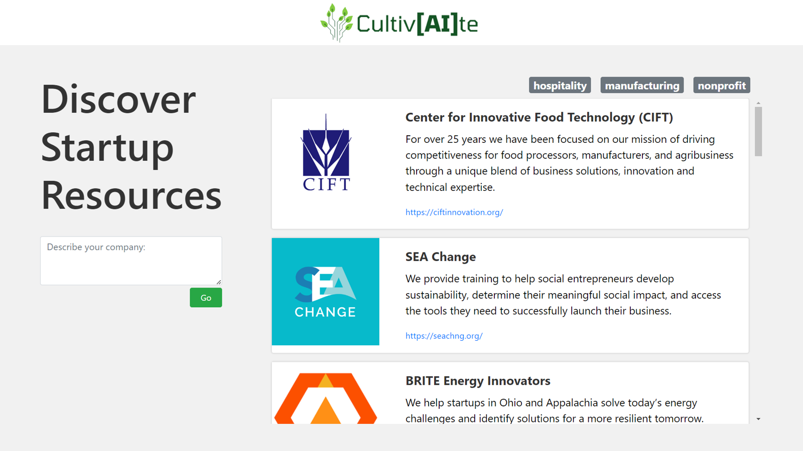

Startup Resource Recommender
Many early-stage startups never leave the "idea" stage of development. This project aims to help startups get off the ground by recommending Cleveland-area startup resources based on a simple text description of your startup idea.
(Not currently deployed, sorry - machine learning models are a bit expensive to host)

The classifier for industry-tags combines sentence-transformer embeddings with sklearn's NearestCentroid model. Training data came from a 2013 Dump of Crunchbase company information, which I augmented with short company descriptions scraped from the API.
Performance was difficult to measure. One reason was that the classes overlapped significantly (i.e. web/software/mobile/social/search all relate to apps). And while companies always fit into several industry categories (often four or five), the training dataset labeled each company with only one industry.
Since there were 41 industry classes, the baseline for random guessing was 2.4% accuracy, and simply choosing the majority class from the training set can give 4.9% accuracy. Compared to these baselines, the classifier acheived top-1 accuracy of 41%, and top-5 accuracy of 81% - indicating a relatively strong classifier.